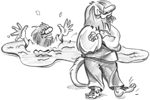
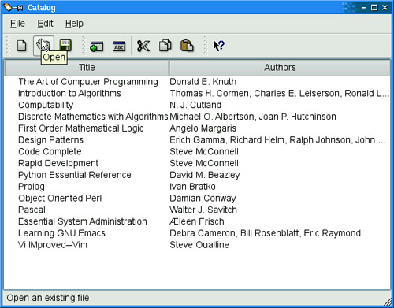
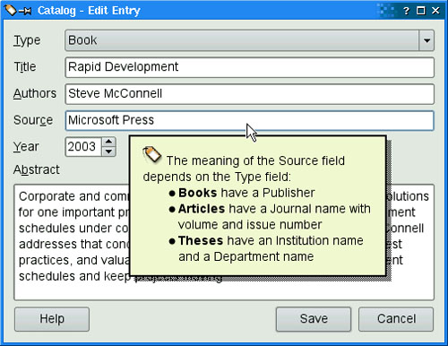

|
|

Most applications provide their users with online help. Some help is short, such as tooltips, status tips, and "What's This?" help. Naturally, Qt supports all of these. Other help can be much more extensive, involving many pages of text. For this kind of help, you can use QTextBrowser as a simple online help browser, or you can invoke Qt Assistant or an HTML browser from your application.
A tooltip is a small piece of text that appears when the mouse hovers over a widget for a certain period of time. Tooltips are presented with black text on a yellow background. Their primary use is to provide textual descriptions of toolbar buttons.
We can add tooltips to arbitrary widgets in code using QWidget::setToolTip(). For example:
findButton->setToolTip(tr("Find next"));
To set the tooltip of a QAction that could be added to a menu or a toolbar, we can simply call setToolTip() on the action. For example:
newAction = new QAction(tr("&New"), this);
newAction->setToolTip(tr("New document"));
If we don't explicitly set a tooltip, QAction will automatically use the action text.
A status tip is also a short piece of descriptive text, usually a little longer than a tooltip. When the mouse hovers over a toolbar button or a menu option, a status tip appears in the status bar. Call setStatusTip() to add a status tip to an action or to a widget:
newAction->setStatusTip(tr("Create a new document"));
Figure 17.1 shows a tooltip and a status tip in an application.

In some situations, it is desirable to provide more information about a widget than tooltips or status tips can give. For example, we might want to provide a complex dialog with explanatory text about each field without forcing the user to invoke a separate help window. "What's This?" mode is an ideal solution for this. When a window is in "What's This?" mode, the cursor changes to and the user can click on any user interface component to obtain its help text. To enter "What's This?" mode, the user can either click the ? button in the dialog's title bar (on Windows and KDE) or press Shift+F1.
Here is an example of "What's This?" text set on a dialog:
dialog->setWhatsThis(tr("<img src=\":/images/icon.png\">"
" The meaning of the Source field depends "
"on the Type field:"
"<ul>"
"<li><b>Books</b> have a Publisher"
"<li><b>Articles</b> have a Journal name with "
"volume and issue number"
"<li><b>Theses</b> have an Institution name "
"and a Department name"
"</ul>"));
We can use HTML tags to format "What's This?" text. In the example shown in Figure 17.2, we include an image (which is listed in the application's resource file), a bulleted list, and some text in bold. The tags and attributes that Qt supports are specified at http://doc.trolltech.com/4.3/richtext-html-subset.html.

When we set "What's This?" text on an action, the text will be shown when the user clicks the menu item or toolbar button or presses the shortcut key while in "What's This?" mode. When the user interface components of an application's main window provide "What's This?" text, it is customary to provide a What's This? option in the Help menu and a corresponding toolbar button. This can be done by creating a What's This? action with the static QWhatsThis::createAction() function and adding the action it returns to a Help menu and to a toolbar. The QWhatsThis class also provides static functions to programmatically enter and leave "What's This?" mode.
|
|
| Converted from CHM to HTML with chm2web Pro 2.85 (unicode) |